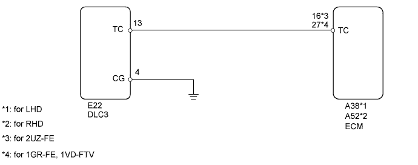
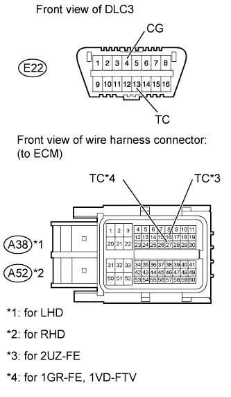

CRUISE CONTROL SYSTEM > TC and CG Terminal Circuit |

| 1.CHECK HARNESS AND CONNECTOR (DLC3 - ECM AND BODY GROUND) |
 |
Disconnect the A38*1 or A52*2 ECM connector.
Measure the resistance according to the value(s) in the table below.
| Tester Connection | Condition | Specified Condition |
| E22-13 (TC) - A38-16 (TC) | Always | Below 1 Ω |
| E22-4 (CG) - Body ground | ||
| E22-13 (TC) - Body ground | Always | 10 kΩ or higher |
| Tester Connection | Condition | Specified Condition |
| E22-13 (TC) - A52-16 (TC) | Always | Below 1 Ω |
| E22-4 (CG) - Body ground | ||
| E22-13 (TC) - Body ground | Always | 10 kΩ or higher |
| Tester Connection | Condition | Specified Condition |
| E22-13 (TC) - A38-27 (TC) | Always | Below 1 Ω |
| E22-4 (CG) - Body ground | ||
| E22-13 (TC) - Body ground | Always | 10 kΩ or higher |
| Tester Connection | Condition | Specified Condition |
| E22-13 (TC) - A52-27 (TC) | Always | Below 1 Ω |
| E22-4 (CG) - Body ground | ||
| E22-13 (TC) - Body ground | Always | 10 kΩ or higher |
|
| ||||
| OK | ||
| ||